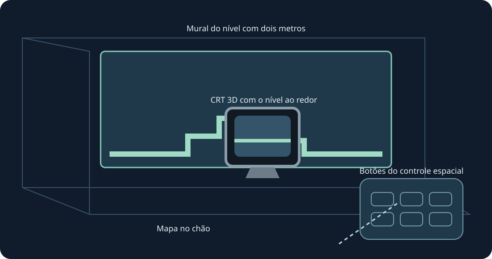

Paredes, chão, mesa de arcade, CRT e galeria curva. Prévia XR experimental. Use ambas as pegas para redimensionar.
Prévia experimental. Compilação, lint, geometria e entrada são verificados. Nenhum headset foi conectado, instalado ou usado nesta versão; rastreamento, conforto, passthrough e fluidez aguardam seu teste físico.
Para testar depois, ative o modo de desenvolvedor e instale o APK ARM64 público com SideQuest ou adb install -r. Abra Mario Compilation Ultra XR em Fontes desconhecidas, escolha cartucho ou ZIP pelo seletor do sistema e jogue. Importe All-Stars + World e Yoshi’s Island separadamente. O APK público não contém ROMs nem progresso.
Escolha nível, CRT nativo, controle ou opções como alvo. Uma empunhadura move e gira; duas redimensionam o nível mesmo com posição travada. Há ajustes finos e metade/dobro/redefinir. Recuperar traz a interface de volta. Y abre opções; a página Jogar tem todos os botões SNES.
Pince e arraste o analógico; use a outra mão nos botões. A pinça com o dedo médio segura alças. Perder o rastreamento solta os comandos.
Uma nova instalação pede 90 Hz e um mural AR transparente de dois metros. Há frequência alternativa compatível; a simulação mantém o ritmo original. Varredura da sala e permissões de cena/âncoras são opcionais para paredes automáticas. Posicionamento manual e calibração do chão continuam disponíveis. O runtime fornece passthrough; sem permissões de Internet, microfone ou imagens da câmera.
As imagens fantasma são informativas e não simulam objetos distantes. Posições verificadas aparecem no início; imagens aprendidas vêm apenas do jogo local.
A mesa arcade mostra a área carregada. A física e a ativação dos objetos continuam originais.
Atalhos no PC: segure o clique do analógico direito; direcional esquerda/direita muda zoom, cima 1:1, baixo mapa inteiro, A trava, B câmera original, X captura, Y segue o jogador. Soltar restaura os controles SNES. F1 ou ajuda Y no menu abre a explicação ilustrada.
SNES: D-pad · A · B · X · Y · L · R · Start · Select
Touch: A → SNES B · B → SNES Y · X → SNES A · RT → SNES X · R3 → Start · LT → Rewind · Y → Mover opções
Parity · Validation